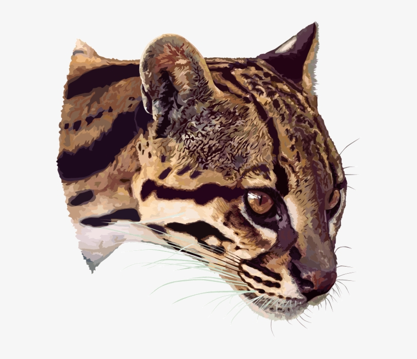
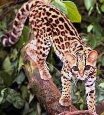
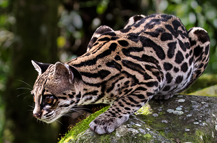
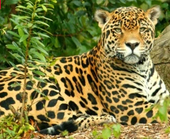
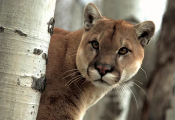
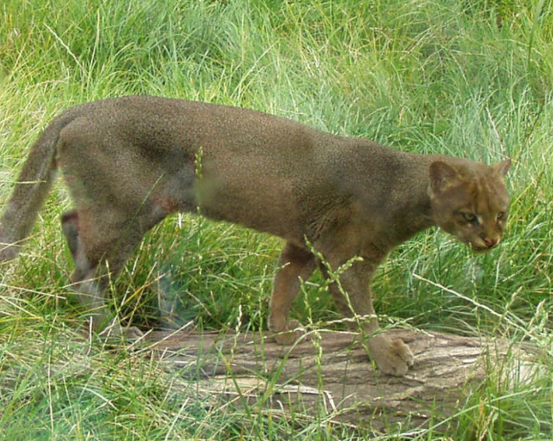

Felidae es una familia de mamiferos del orden Carnivora, comúnmente conocidos como gatos. El término "gato" se usa tanto para referirse a los felinos en general, como al gato doméstico o Felis catus.
Todos los felinos son carnívoros y, en la mayoría de los casos, son predadores que acechan a sus presas de manera solitaria. Los felinos salvajes están presentes en África, Europa, Asia y América. Algunos están habituados a los hábitats boscosos, otros a los ambientes áridos y algunos incluso a los humedales y montañas. Sus patrones de actividad varían desde los nocturnos hasta los crepusculares y los diurnos, dependiendo de las presas que prefieran.
En Costa Rica hay seis especies de felinos silvestres:
| Nombre científico | Nombre común | Longitud de cabeza y cuerpo | Longitud de cola | Peso | Estado de conservación | Imagen |
|---|---|---|---|---|---|---|
| Leopardus pardalis | manigordo, ocelote | 70 - 90 cm | 30 - 40 cm | 11 kg | LC (preocupación menor) |  | Leopardus tigrinus | caucel, tigrillo | 39 -78 cm | 20 - 42 cm | 2 - 3 kg | VU (vulnerable) |  | Leopardus wiedii | caucel, tigrillo | 40 - 60 cm | 3.5 kg | NT (casi amenazado) |  | Pantera onca | tigre, jaguar | 162 - 183 cm | 75 cm | 36 -160 kg | NT (casi amenazado) |  | Puma concolor | puma, león de montaña | 150 170 cm | 70 - 100 cm | 100 -120 kg | LC (preocupación menor) |  | Puma yagarundi | yagarundi, león breñero | 50 - 70 cm | 30 - 60 cm | 3.5 - 9.1 kg | LC (preocupación menor) |  |